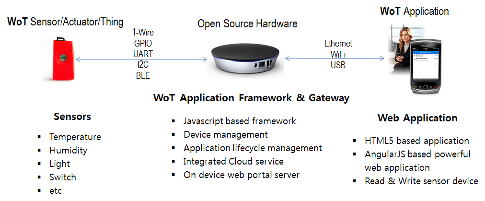
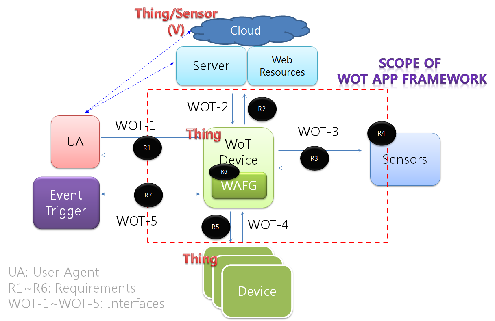

This document defines the simple web of things architecture model.
This specification is a proposal for building the High Level WoT Architecture model.
Terminology
This document uses the following terms defined elsewhere:
- client
-
The role adopted by an application when it is retrieving and/or rendering resources or resource manifestations. [W3C WACterms]
- device
-
An apparatus through which a user can perceive and interact with the web. [W3C dig loss]
NOTE – In the IoT, a piece of equipment with the mandatory capabilities of communication and the optional capabilities of sensing, actuation, data capture, data storage and data processing [ITU-T Y.2060].
- Internet of things (IoT)
-
A global infrastructure for the information society, enabling advanced services by interconnecting (physical and virtual) things based on existing and evolving interoperable information and communication technologies. [ITU-T Y.2060]
- resource
-
The term "resource" is used in a general sense for whatever might be identified by a URI. [IETF RFC 3986]
- server
-
The role adopted by an application when it is supplying resources or resource manifestations. [W3C WACterms]
- World Wide Web
-
An information space in which the items of interest, referred to as resources, are identified by global identifiers called Uniform Resource Identifiers (URI). [b-W3C web arch]
- thing
-
With regard to the Internet of things, this is an object of the physical world (physical things) or the information world (virtual things), which is capable of being identified and integrated into communication networks. [ITU-T Y.2060]
- URI
-
A simple and extensible means for identifying a resource. [b-IETF RFC 3986]
- user agent
-
A client within a device that performs rendering. Browsers are examples of user agents, as are web robots that automatically traverse the web collecting information. [b-W3C dig loss]
- web resource
-
A resource, identified by a URI, that is a member of the web core. [b-W3C WACterms]
- Web of things (WoT)
-
A way to realize the IoT where (physical and virtual) things are connected and controlled through the World Wide Web. [ITU-T Y.2063]
Architecuture Model
Execution model of WoT Application
This is a running model of WoT gateway.

Simple Web of Things Architecture Model
The following diagram illustrates the Functional Components and Interfaces of WoT

Functional Components and Interfaces definition
The Simple WoT consists of mandatory component (a Thing as WoT enabled device) and interfaces exposed by those components.
Functional Components
WAFG(WoT Application Framework and Gateway)- WAFG is a component resident in the WoT device and is the entry point to the WoT Enabler for all the requests coming from other component. The WoT Gateway exposes WOT-1, WOT-2, WOT-3, WOT-4 and WOT-5 interface.
UA(User Agent) -
A user agent is any software that retrieves, renders and facilitates end-user interaction with web content. User agents include web browsers, media players, plug-ins, extension and web applications that help in retrieving, rendering and interacting with web content. User Agent is a component resident in the network (outside the device). It has the responsibility for interacting bidirectionally with WoT Device by using WoT-1 interface exposed by the WoT Gateway.
Service Resources-
Services resources(Cloud, Server, Web Resources) are the one of component resident in the network (outside the device) to provide external resources by using WoT-2 interface.
Sensors-
A sensor is a small device that detects and responds to some type of input from the physical environment. Sensor is a component with WoT device (internally or externally) to exchange sensing information by using WoT-3 interface.
- Passive sensor: TBD
- Active sensor: TBD
other Thing (other WoT Devices)-
An external thing is another WoT device. It uses WOT-4 interface exposed by other WoT Devices for collaboration.
- Device Type1: TBD
- Device Type2: TBD
- Device Type3: TBD
-
It is a component resident in the network (outside the device). Through WoT-6 interface, Event Trigger is responsible to send push notifications.
Interface definition
WOT-1
This interface is exposed by the WAFG to User Agent. It is used by the UA to interact with the WoT Devices for performing some core functionalities related to web of things application, covering: user authentication, authorization, WoT device management.
WOT-2
This interface is exposed by the Service Resources. It is used by the WAFG to interact with the external service provider for using external service resources.
WOT-3
This interface is exposed by the WAFG to Sensors internally/externally connecting with WoT Devices.
WOT-4
This interface is exposed by the WAFG to other WoT Device for realizing the collaboration between the WoT Devices. This interface is both exposed, and used, by WAFG.
WOT-5
This interface is exposed by the WAFG and is used by the Event Trigger to push notification to the WAFG.
Functional Components and Interfaces definition
The ....
Interface Definitions – WOT1
This interface is exposed by the WAFG to User Agent.
- WAFG and UA SHALL support general web standards (e.g: HTTP, URI, HTML)
- WAFG SHALL support web standard based User Interface
- Shall provide the offline connectivity
- shall provide capabilities to start and monitor all of WoT application feature
WAFG SHALL support WoT Gateway functionality such as:
- Connectivity down to sensors and existing controllers embedded in the device
- Manageability (Device, Sensor, System) and related protocol
- Security and privacy
- WAFG may support remote management for fault recovery e.g. firmware update, quarantine device. After this operation of firmware update, the device may reboot to a known and consistent state
WAFG MAY support WoT Gateway functionality for legacy business:
- Connectivity up to the cloud and enterprise
- WAFG SHALL further support the protocols defined in the following
•
- WAFG SHALL support [@@@] to ….
Interface Definitions – WOT2
This interface is exposed by the Service Resources. It is used by the WAFG to interact with the external service provider for using external service resources.
WOT-2 covers:
- expose an open API to access and exchange data for integration with external service
- Expose an external web resources
- allow to synchronize Thing’s status and information.
@@TBD
Interface Definitions – WOT3
This interface is exposed by the WAFG to Sensors internally/externally connecting with WoT Devices.
@@TBD
Interface Definitions – WOT4
This interface is exposed by the WAFG to other WoT Device for realizing the collaboration between the WoT Devices. This interface is both exposed, and used, by WAFG.
@@TBD
Interface Definitions – WOT5
This interface is exposed by the WAFG and is used by the Event Trigger to push notification to the WAFG.
@@TBD